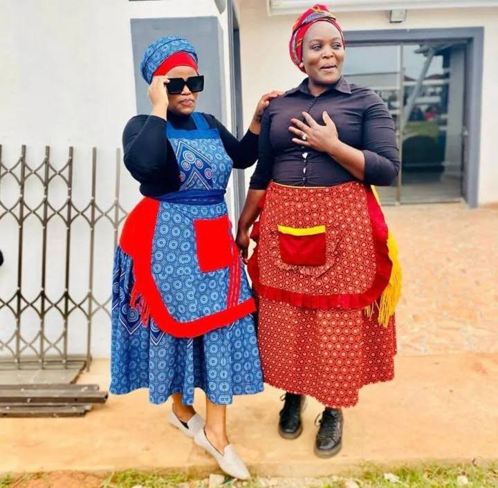
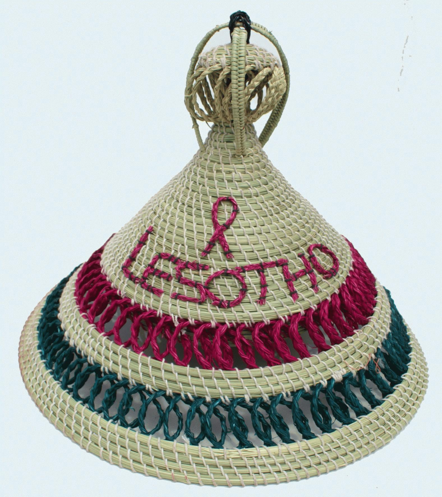

seana-marena
A prestigious blanket worn by elders and people of status
Learn more
Motlatsi

It was created to honour the birth of crown prince Lerotholi in 2007.
A blanket of specific design worn by both men and women.
Learn more
Lehlosi

A blanket made from skin of wild cats or leopards known as lehlosi , worn by chiefs.
Lean more
Lingoetsi
a blanket given to a newlywed bride.
Learn more
Letata
A traditional blanket style from older times, worn by both women and men
Learn more
Setipe
Traditional style of blanket worn by men
Learn more
Mokhahla
A historical blanket style for men
Learn more
Ketse-dikobo:

A traditional blamket with a sheep wool lining for extra warmth.
Learn more
Mohodu
A blanket given to a young boy after his initiation to signify his new status as a men
Learn more
Tjale:
A shawl-like blanket traditional worn by Basotho grandmothers.
Learn more
women's attire
Seshoeshoe fabric is a staple of women's traditional and contemporary fashion.
Seshoeshoe dress:

A long ,vibrant,printed cotton dress worn for special occasions.
Learn more
Traditional seshoeshoe skirt
A full patterned skirt
Learn more
Traditional seshoeshoe apron:

worn with either seshoeshoe dress or seshoeshoe skirt.
Learn more
Modernized seshoeshoe styles:
The fabric used to create contemporary dress designs and outfit.
Learn more
colorful long dresses and skirts:

Everyday wear for women.
Learn more
Beaded dresses(thethana ea banana):
Historically worn by young girls.
Learn more
Fiber skirt(Mose oa lekoko):

Worn by girls after reaching a certain age.
Learn more
Cow skin skirt(mose oa lekoko):

Traditiona skirt, also for older girls.
Learn more
Beaded neckpiece(sefaha sa letsopa):
Worn by young girls.
Learn more
Headwraps:
Worn with seshoeshoe dresses.
Learn more
Men's attire
In addition to blankets ,men wear specific garments depending on their status and activity.
Ts'eha:

It is undergarment made of sheep skinand and it is traditionally worn by young boys.
Learn more
Embroidery and beadwork:
Adornments added to men's attire for special occasion.
Learn more
Gum boots:

practical rain boots worn hy herd boys
Learn more
Woolen caps or balsclaves:
Worn by herd boys to protect against cold and dust.
Learn more
Sekola:
An animal skin hat traditionlly worn by warrious.
Learn more
Kuoane:
A bonnet-type hat made from animal skin.
Learn more
Kharetsa:

Another type of hat made from animal skin.
Learn more
Headwear
Headwear is a significant part of Basotho identity, with different styles for various purpose.
Mokorotlo:

A national conical-shaped hat wonen from grass and worn by men and women.
Learn more
ts'ets'e:

Another style of of traditional headgear.
Learn more
Staw hats:
Other type of hat woven from sraw and leaves
Seth M'pao:
A traditional Basotho winter hat.
Learn more
Ceremonial and special attire
Specific garments are reserved for important ritual and ceremonies.
Initiation masks(Bale):
Worn by dirls during initiation school rituals.
Learn more
Traditional healer's bandolier:

It is worn by spritual healers and it is consist of leather strips and beads.
Lean more
Goatskin skirt(thethana):
Worn by females
Learn more